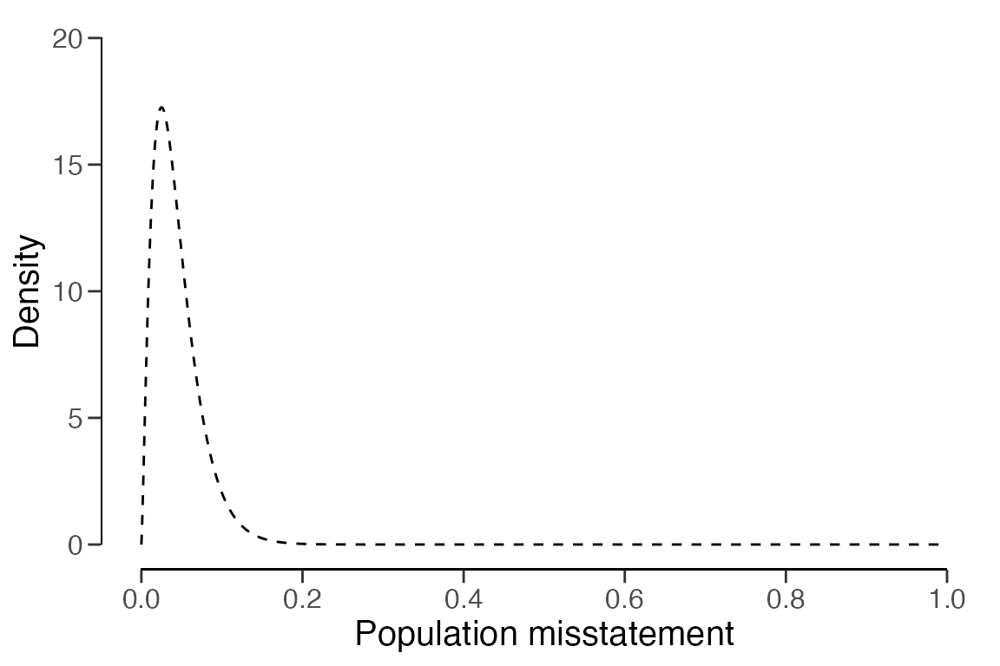
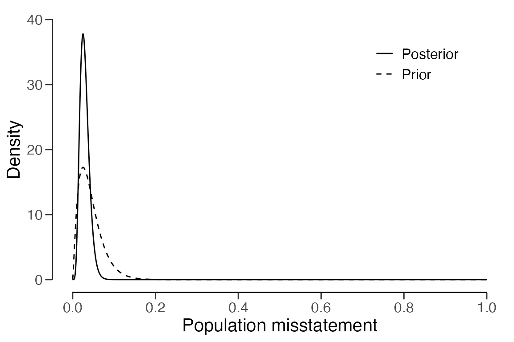
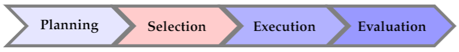
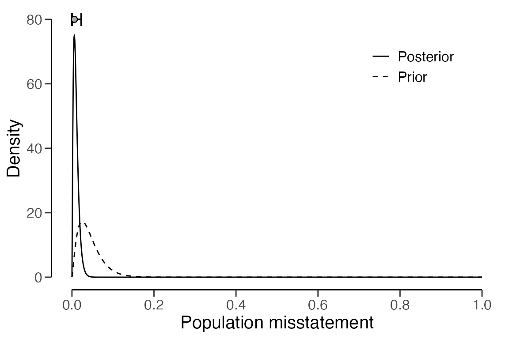

Walkthrough of the Bayesian audit sampling workflow
Koen Derks
Source:vignettes/articles/bayesian-sampling-workflow.Rmd
bayesian-sampling-workflow.RmdIntroduction
Welcome to the ‘Walkthrough of the Bayesian audit sampling workflow’ vignette of the jfa package. This page aims to demonstrate how the package can assist auditors in the standard audit sampling workflow (hereafter referred to as “audit workflow”) in a Bayesian fashion.
In this audit workflow example, we will be looking at a hypothetical scenario involving BuildIt, a fictitious construction company based in the United States. BuildIt is undergoing an audit by an external auditor from a fictional audit firm. At the end of the fiscal year, BuildIt has presented a summary of its financial status in its financial statements. The objective of the auditor is to form an opinion on the fairness of BuildIt’s financial statements. The auditor’s opinion should be compliant with professional auditing standards (American Institute of Certified Public Accountants (AICPA), 2021; International Auditing and Assurance Standards Board (IAASB), 2018; Public Company Accounting Oversight Board (PCAOB), 2020).
The auditor is required to gather appropriate and sufficient evidence to support the hypothesis that the misstatement in the financial statements is less than a specified amount, known as the materiality. If the financial statements contain material misstatements, this means that the inaccuracies in the financial statements are substantial enough to influence the decisions of stakeholders who depend on these financial statements. For this example, the overall materiality of the financial statements is set to ten percent. This implies that for the auditor to endorse the financial statements, inaccuracies in the financial statements should not exceed ten percent.
During an audit, the auditor examines the populations that underpin
the line items in the financial statement. In this vignette, we
concentrate on the BuildIt data set that is included in the
package, which contains
= 3500 invoices from the BuildIt’s rental account. The data can be
loaded in R via data("BuildIt").
## ID bookValue auditValue
## 1 82884 242.61 242.61
## 2 25064 642.99 642.99
## 3 81235 628.53 628.53
## 4 71769 431.87 431.87
## 5 55080 620.88 620.88
## 6 93224 501.76 501.76For this population, the auditor determines the performance materiality, which is the degree of materiality that applies to this specific population. In this case, the performance materiality is established at fifty percent of the overall materiality, or five percent. This implies that for the auditor to endorse the population, the misstatement in the population should not exceed five percent.
To form an opinion about the misstatement in the population, the auditor typically divides their audit workflow into four stages. Initially, they need to plan the minimum sample size they need to examine to make inferences about the population. Next, they have to select the required sample from the population. Subsequently, they need to inspect the selected sample and determine the audit (i.e., true) value of the items it comprises. Finally, they must use the information from the audited sample to make inferences about the misstatement in the population.

Setting up the audit
The auditor aims to assert that, with 95 percent confidence, the misstatement in the population is less than the performance materiality of five percent. Drawing from last year’s audit at BuildIt, where the upper limit of the misstatement was found to be 2.5 percent, they are willing to accept a maximum of 2.5 percent misstatements in the intended sample. Consequently, the auditor can rephrase their statistical statement as wanting to conclude that, if 2.5 percent misstatements are detected in the sample, they can determine with 95 percent confidence that the misstatement in the population is less than the performance materiality of five percent.
confidence <- 0.95 # Confidence level = 95%
materiality <- 0.05 # Performance materiality = 5%
expected <- 0.025 # Tolerable sample errors = 2.5%Many audits are conducted according to the audit risk model (ARM), which posits that the overall uncertainty about the auditor’s statement (1 - confidence) is a product of three components: inherent risk, control risk, and detection risk.
- Inherent risk refers to the risk of a material error occurring in BuildIt’s financial statement before considering any related control systems (e.g., computer systems).
- Control risk is the risk that BuildIt’s internal control systems fail to prevent or detect a material misstatement.
- Detection risk is the risk that the auditor will not discover material misstatements that exist in BuildIt’s financial statements.
The ARM is practically useful because for a given level of audit risk, the tolerable detection risk is inversely proportional to the other two risks. Hence, the ARM can be beneficial for the auditor as it allows them to reduce the amount of audit evidence required from the sample in the presence of risk-reducing information.
Typically, auditors assess inherent risk and control risk on a three-point scale: low, medium, or high. Different audit firms may assign different standard percentages to these categories. In the auditor’s firm, the probabilities for low, medium, and high are defined as 50 percent, 60 percent, and 100 percent, respectively. After evaluating BuildIt’s internal control systems, the auditor has classified the internal control risk as medium (60 percent), while they have determined the inherent risk to be high (100 percent).
ir <- 1 # Inherent risk = 100%
cr <- 0.6 # Control risk = 60%Stage 1: Planning an audit sample

In a Bayesian audit, the initial step for the auditor is to define
the prior distribution that aligns with their assessment of the inherent
risk and control risk. They can create a prior distribution that
integrates the information from the risk assessments in the ARM using
the auditPrior() function. For more details on how this is
accomplished, we refer to Derks et al.
(2021).
prior <- auditPrior(
method = "arm", ir = ir, cr = cr,
likelihood = "poisson", materiality = materiality, expected = expected
)The prior distribution can be visualized via the plot()
function.
plot(prior)
With the prior distribution now defined, the auditor can determine
the necessary sample size for their intended inference using the
planning() function. They use the prior object
as an input for the planning() function.
stage1 <- planning(
materiality = materiality, expected = expected,
conf.level = confidence, prior = prior
)The auditor can then examine the outcome of their planning procedure
using the summary() function. The results indicate that,
given the prior distribution, the auditor needs to select a sample of
= 178 items. This ensures that if a maximum of
= 4.45 misstatements are found, they can assert with 95 percent
confidence that the misstatement in BuildIt’s financial statements is
less than the performance materiality of five percent.
summary(stage1)##
## Bayesian Audit Sample Planning Summary
##
## Options:
## Confidence level: 0.95
## Materiality: 0.05
## Hypotheses: H₀: Θ > 0.05 vs. H₁: Θ < 0.05
## Expected: 0.025
## Likelihood: poisson
## Prior distribution: gamma(α = 2.325, β = 53)
##
## Results:
## Minimum sample size: 178
## Tolerable errors: 4.45
## Posterior distribution: gamma(α = 6.775, β = 231)
## Expected most likely error: 0.025
## Expected upper bound: 0.049981
## Expected precision: 0.024981
## Expected BF₁₀: 9.6614The auditor can examine how the prior distribution compares to the
expected posterior distribution by using the plot()
function. The expected posterior distribution is the posterior
distribution that would result if the auditor were to actually observe a
sample of
= 178 items, with
= 4.45 of them being misstated.
plot(stage1)
Stage 2: Selecting a sample

The auditor is now prepared to select the required
= 178 items from the population. They have two statistical methods to
choose from for this task. In record sampling
(units = "items"), inclusion probabilities are assigned at
the item level, treating items of high and low value equally. This means
an item of $5,000 is just as likely to be selected as an item of $1,000.
In monetary unit sampling (units = "values"), inclusion
probabilities are assigned at the level of individual monetary units
(e.g., a dollar). When a dollar is selected to be in the sample, the
item that includes that dollar is selected. This method favors items
with a higher value, as an item with a value of $5,000 is now five times
more likely to be selected than an item with a value of $1,000.
The auditor opts to use monetary unit sampling, as they want to
include more high-valued items. The selection() function
enables them to select the sample from the population using this
sampling scheme. They use the stage1 object as input for
the size argument in the selection() function,
as this passes the calculated sample size from the planning stage
directly to the function.
stage2 <- selection(
data = BuildIt, size = stage1,
units = "values", values = "bookValue", method = "interval"
)Like before, the auditor can examine the results of their sampling
procedure using the summary() function.
summary(stage2)##
## Audit Sample Selection Summary
##
## Options:
## Requested sample size: 178
## Sampling units: monetary units
## Method: fixed interval sampling
## Starting point: 1
##
## Data:
## Population size: 3500
## Population value: 1403221
## Selection interval: 7883.3
##
## Results:
## Selected sampling units: 178
## Proportion of value: 0.062843
## Selected items: 178
## Proportion of size: 0.050857Stage 3: Executing the audit
The selected sample can be singled out by indexing the
$sample object from the sampling result.
sample <- stage2$sampleNext, the auditor can carry out the audit by annotating the items in
the sample with their audit values. This can be done, for example, by
writing the sample to a csv file using write.csv(). The
annotated sample can then be loaded back into the R session for further
evaluation.
# Write the sample to a .csv file:
write.csv(x = sample, file = "auditSample.csv", row.names = FALSE)
# Load annotated sample back into R:
sample <- read.csv(file = "auditSample.csv")In the case of the BuildIt data set, the audit values of
the sample items are already provided in the auditValue
column of the data set.
Stage 4: Evaluating the sample

With the annotated sample, the auditor can perform inference about
the misstatement in the population using the evaluation()
function. By supplying the prior object to the function, it
automatically sets method = "binomial" to align with the
prior distribution.
stage4 <- evaluation(
materiality = materiality, conf.level = confidence, data = sample,
values = "bookValue", values.audit = "auditValue", prior = prior
)The outcomes of their inference can be examined by the auditor using
the summary() function. The upper bound on the population
misstatement is 2.278 percent, which is below the performance
materiality of five percent. Hence, the auditor can conclude that there
is a 95 percent probability that the misstatement in BuildIt’s
population is less than 2.278 percent.
summary(stage4)##
## Bayesian Audit Sample Evaluation Summary
##
## Options:
## Confidence level: 0.95
## Materiality: 0.05
## Hypotheses: H₀: Θ > 0.05 vs. H₁: Θ < 0.05
## Method: poisson
## Prior distribution: gamma(α = 2.325, β = 53)
##
## Data:
## Sample size: 178
## Number of errors: 0
## Sum of taints: 0
##
## Results:
## Posterior distribution: gamma(α = 2.325, β = 231)
## Most likely error: 0.0057359
## 95 percent credible interval: [0, 0.022781]
## Precision: 0.017045
## BF₁₀: 2179.8The prior and posterior distribution can be inspected using the
plot() function.
plot(stage4, type = "posterior")
Conclusion
As the 95 percent upper credible bound on the misstatement in the population is lower than the performance materiality, the auditor has gathered sufficient evidence to conclude that the population does not contain material misstatement.